В предыдущих уроках мы узнали, что дробь, состоящая из целой и дробной частей, называется смéшанным числом.
Все числа, состоящие из целой и дробной частей, называют смéшанными числами.
Смéшанные числа, как и обыкновенные дроби, можно складывать, вычитать, умножать и делить. В этом уроке мы рассмотрим каждое из этих действий отдельно.
Содержание урока- Сложение целого числа и правильной дроби
- Сложение смешанных чисел
- Сложение целого и смешанного числа
- Вычитание дроби из целого числа
- Вычитание смешанного числа из целого числа
- Вычитание смешанных чисел
- Умножение целого числа на дробь
- Умножение смешанного числа на дробь
- Умножение смешанных чисел
- Деление целого числа на дробь
- Деление дроби на целое число
- Деление целого числа на смешанное число
- Деление смешанного числа на целое число
- Деление смешанных чисел
- Задания для самостоятельного решения
Сложение целого числа и правильной дроби
Встречаются задачи, в которых требуется сложить целое число и правильную дробь. Например, сложить число 2 и дробь \(\frac{1}{2}\). Чтобы решить этот пример, нужно число 2 представить в виде дроби
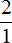
. Затем сложить дроби с разными знаменателями: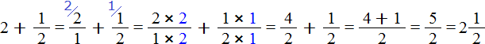
А теперь внимательно посмотрим на этот пример. Смотрим на его начало и на его конец. Начало у него выглядит так:
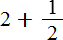
, а конец так: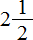
. Различие в том, что в первом случае число 2 и дробь \(\frac{1}{2}\) соединяются знаком сложения, а во втором случае они записаны вместе. На самом деле это одно и то же. Дело в том, что это свёрнутая форма записи смешанного числа, а — развёрнутая.Когда перед нами смешанное число вида , мы должны понимать, что знак сложения опущен.
Какой можно сделать вывод? Если потребуется сложить целое число и правильную дробь, можно опустить плюс и записать целое число и дробь вместе.
Значит значение выражения равно
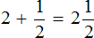
Если к двум целым пиццам прибавить половину пиццы, то получится две целые пиццы и ещё половина пиццы:
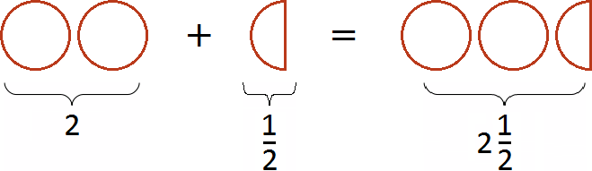
Пример 2. Найти значение выражения
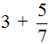
Представим число 3 в виде дроби
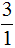
. Затем сложим дроби с разными знаменателями: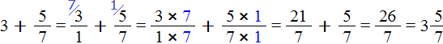
Это первый способ. Второй способ намного проще. Можно поставить знак равенства и записать целую и дробную часть вместе. То есть опустить знак сложения:
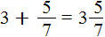
Пример 3. Найти значение выражения
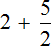
Можно записать вместе число 2 и дробь \(\frac{5}{2}\), но этот ответ не будет окончательным, поскольку в дроби \(\frac{5}{2}\) можно выделить целую часть.
Поэтому в данном примере сначала нужно выделить целую часть в дроби \(\frac{5}{2}\) . Пять вторых это две целых и одна вторая:
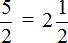
Теперь в главном выражении вместо дроби \(\frac{5}{2}\) запишем смешанное число
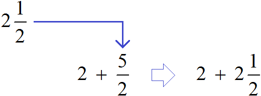
Получили новое выражение
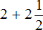
. В этом выражении смешанное число запишем в развёрнутом виде: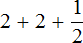
Применим сочетательный закон сложения. Сложим две двойки, получим 4:
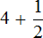
Теперь свернём полученное смешанное число:
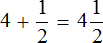
Это окончательный ответ. Подробное решение этого примера можно записать следующим образом:
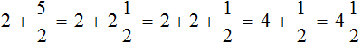
Сложение смешанных чисел
Встречаются задачи, в которых требуется сложить смешанные числа. Например, найти значение выражения
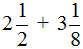
. Чтобы решить этот пример, нужно целые и дробные части сложить по отдельности.Для начала запишем смешанные числа в развёрнутом виде:
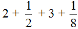
Применим сочетательный закон сложения. Сгруппируем целые и дробные части по отдельности:
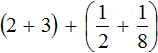
Вычислим целые части: 2 + 3 = 5. В главном выражении заменяем выражение в скобках (2 + 3) на полученную пятёрку:
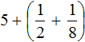
Теперь вычислим дробные части. Это сложение дробей с разными знаменателями. Как складывать такие дроби мы уже знаем:
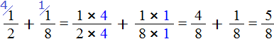
Получили
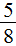
. Теперь в главном выражении заменяем дробные части на полученную дробь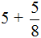
Теперь свернем полученное смешанное число:
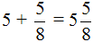
Таким образом, значение выражения равно
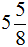
. Попробуем изобразить это решение в виде рисунка. Если к двум целым и половине пиццы прибавить три целые и одну восьмую пиццы, то получится пять целых пицц и ещё пять восьмых пиццы: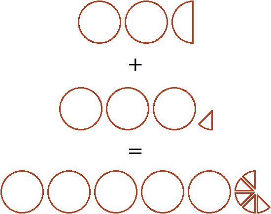
Подобные примеры нужно решать быстро, не останавливаясь на подробностях. Находясь в школе, нам пришлось бы записать решение этого примера следующим образом:
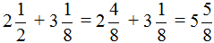
Если в будущем увидите такое короткое решение, не пугайтесь. Вы уже понимаете, что откуда взялось.
Пример 2. Найти значение выражения
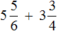
Запишем смешанные числа в развёрнутом виде:
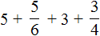
Сгруппируем целые и дробные части по отдельности:
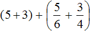
Вычислим целые части: 5 + 3 = 8. В главном выражении заменяем выражение в скобках (5 + 3) на полученное число 8
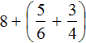
Теперь вычислим дробные части:
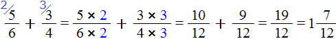
Получили смешанное число
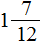
. Теперь в главном выражении заменяем выражение в скобках на полученное смешанное число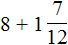
Получили выражение . В данном случае число 8 надо прибавить к целой части смешанного числа . Для этого смешанное число можно временно развернуть, чтобы было понятнее, что с чем складывать:
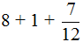
Сложим целые части. Получаем 9
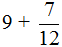
Сворачиваем готовый ответ:
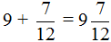
Таким образом, значение выражения равно
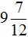
.Полное решение этого примера выглядит следующим образом:
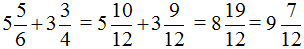
Для решения подобных примеров существует универсальное правило. Выглядит оно следующим образом:
Чтобы сложить смешанные числа, надо:
- привести дробные части этих чисел к общему знаменателю;
- отдельно выполнить сложение целых и дробных частей.
Если при сложении дробных частей получилась неправильная дробь, выделить целую часть в этой дроби и прибавить ее к полученной целой части.
Применение готовых правил допустимо в том случае, если суть темы полностью понятна. Решение по-шаблону, поглядывая в другие подобные примеры, приводит к ошибкам на обнаружение которых уходит дополнительное время. Поэтому, сначала разумнее понять тему, а затем пользоваться готовым правилом.
Пример 3. Найти значение выражения
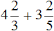
Воспользуемся готовым правилом. Приведём дробные части к общему знаменателю, затем по отдельности сложим целые и дробные части:
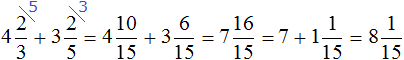
Сложение целого и смешанного числа
Встречаются задачи, в которых нужно сложить целое и смешанное число. Например, сложить 2 и смешанное число
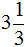
. В этом случае целые части складываются отдельно, а дробная часть остаётся без изменения: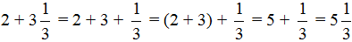
Здесь смешанная дробь была развёрнута в ходе решения, затем целые части были сгруппированы и сложены. В конце целая и дробная части были свёрнуты. В результате получили ответ
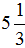
.Попробуем изобразить это решение в виде рисунка. Если к двум целым пиццам прибавить три целые и треть пиццы, то получятся пять целых и треть пиццы:
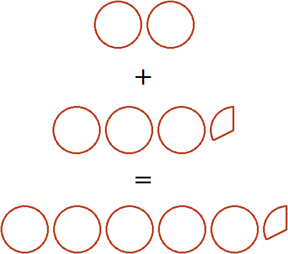
Пример 2. Найти значение выражения
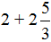
В этом примере, как и в предыдущем, нужно сложить целые части:
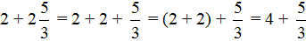
Осталось свернуть целую и дробную части, но дело в том, что дробная часть
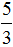
представляет собой неправильную дробь. Сначала нужно выделить целую часть в этой неправильной дроби. Затем целую часть этой дроби прибавить к 4, а дробную часть оставить без изменения. Продолжим данный пример на новой строке:Вычитание дроби из целого числа
Встречаются задачи, в которых требуется вычесть дробь из целого числа. Например, вычесть из числа 1 дробь \(\frac{1}{2}\). Чтобы решить такой пример, нужно целое число 1 представить в виде дроби , и выполнить вычитание дробей с разными знаменателями:
Если имеется одна целая пицца и мы вычтем из неё половину пиццы, то у нас получится половина пиццы:
Пример 2. Найти значение выражения .
Представим число 2 в виде дроби  , и выполним вычитание дробей с разными знаменателями:
, и выполним вычитание дробей с разными знаменателями:
Если имеются две целые пиццы и мы вычтем из низ половину, то останется одна целая и половина пиццы:
Такие примеры можно решать в уме. Достаточно суметь воспроизвести их в своём воображении. К примеру, найдём значение выражения , не приводя на бумаге никаких вычислений.
Представим, что число 3 это три пиццы:
Нужно вычесть из них \(\frac{1}{3}\). Мы помним, что треть выглядит следующим образом:
Теперь представим, во что превратятся три пиццы, если отрезать от них эту треть
Получилось (две целых и две трети пиццы).
Чтобы убедиться в правильности решения, можно найти значение выражения обычным методом, представив число 3 в виде дроби, и выполнив вычитание дробей с разными знаменателями:
Пример 3. Найти значение выражения
Представим число 3 в виде дроби . Затем выполним вычитание дробей с разными знаменателями:
Вычитание смешанного числа из целого числа
Теперь мы готовы к тому, чтобы вычесть смешанное число из целого числа. Найдём значение выражения .
Чтобы решить этот пример, число 5 нужно представить в виде дроби, а смешанное число  перевести в неправильную дробь. После перевода смешанного числа
перевести в неправильную дробь. После перевода смешанного числа  в неправильную дробь, получим дробь . Теперь выполним вычитание дробей с разными знаменателями:
в неправильную дробь, получим дробь . Теперь выполним вычитание дробей с разными знаменателями:
Если из пяти целых пицц вычесть одну целую и половину пиццы, то останутся три целые пиццы и половина пиццы:
Пример 2. Найти значение выражения
Представим 6 в виде дроби , а смешанное число , в виде неправильной дроби. После перевода смешанного числа в неправильную дробь, получим дробь . Теперь выполним вычитание дробей с разными знаменателями:
Примеры на вычитание дроби из числа или вычитание смешанной дроби из числа опять же можно выполнять в уме. Этот процесс легко поддаётся воображению.
К примеру, если нужно быстро найти значение выражения , то вовсе необязательно представлять число 2 в виде дроби и выполнять вычитание дробей с разными знаменателями. Число 2 можно вообразить, как две целые пиццы и далее представить, как от одной из них отрезали две третьих (два куска из трёх)
Тогда от той пиццы, от которой отрезали \(\frac{2}{3}\) останется \(\frac{1}{3}\) пиццы. Плюс одна из пицц останется нетронутой. Получится одна целая пицца и треть пиццы:
Если на рисунке вы закроете рукой две третьих пиццы (она закрашена), то сразу всё поймёте.
Вычитание смешанных чисел
Встречаются задачи, в которых требуется вычесть из одного смешанного числа другое смешанное число. Например, найдём значение выражения:
Чтобы решить этот пример, нужно смешанные числа и  перевести в неправильные дроби, затем выполнить вычитание дробей с разными знаменателями:
перевести в неправильные дроби, затем выполнить вычитание дробей с разными знаменателями:
Если от трёх целых и половины пиццы вычесть две целые и треть пиццы, то останутся одна целая и одна шестая пиццы:
Пример 2. Найти значение выражения
Переводим смешанные числа и в неправильные дроби и выполняем вычитание дробей с разными знаменателями:
К вычитанию смешанных чисел мы ещё вернёмся. В вычитании дробей есть немало тонкостей, которым новичок пока не готов. Например, возможен случай, когда уменьшаемое может оказаться меньше вычитаемого. Это может вывести нас в мир отрицательных чисел, которых мы ещё не изучали.
А пока изучим умножение смешанных чисел. Благо оно не такое сложное, как сложение и вычитание.
Умножение целого числа на дробь
Чтобы целое число умножить на дробь, достаточно умножить это целое число на числитель дроби, а знаменатель оставить без изменения.
Например, умножим число 5 на дробь \(\frac{1}{2}\). Чтобы решить этот пример, нужно число 5 умножить на числитель дроби \(\frac{1}{2}\), а знаменатель оставить без изменения:
В ответе получилась неправильная дробь. Выделим в ней целую часть:
Если имеются пять целых пицц и мы возьмём от этого количества половину, то у нас окажется две целые пиццы и половина пиццы:
Пример 2. Найти значение выражения
Умножим число 3 на числитель дроби
В ответе получилась неправильная дробь , но мы выделили её целую часть и получили 2.
Также, можно было сократить эту дробь. Получился бы тот же результат. Выглядело бы это следующим образом:
Если имеются три целые пиццы и мы возьмём от этого количества две третьих, то у нас окажется две целые пиццы:
Пример 3. Найти значение выражения
Этот пример решается так же, как и предыдущие. Целое число и числитель дроби нужно перемножить:
Пример 4. Найти значение выражения
Умножим число 3 на числитель дроби \(\frac{1}{2}\)
Умножение смешанного числа на дробь
Чтобы умножить смешанное число на дробь, нужно смешанное число перевести в неправильную дробь, затем выполнить перемножение обыкновенных дробей.
Пример 1. Найти значение выражения
Переведём смешанное число в неправильную дробь. После перевода это число превратится в дробь \(\frac{3}{2}\). Затем можно будет умножить эту дробь на \(\frac{2}{3}\)
Допустим, имеются одна целая и половина пиццы:
Умножить эти куски на \(\frac{2}{3}\) означает взять от них две трети. Чтобы взять от них две трети, сначала разделим их на три равные части. Разделим пополам ту пиццу, которая слева. Тогда у нас получится три равных куска:
Теперь если мы возьмем \(\frac{2}{3}\) (два куска из трёх имеющихся), то получим одну целую пиццу. Для наглядности закрасим эти два куска:
Поэтому значение выражения было равно 1
Умножение смешанных чисел
Встречаются задачи, в которых требуется перемножить смешанные числа. Например, перемножить и . Чтобы решить этот пример, нужно перевести эти смешанные числа в неправильные дроби, затем выполнить умножение неправильных дробей:
Попробуем разобраться в этом примере с помощью рисунка. Допустим, имеются одна целая и половина пиццы:
Теперь разберемся со смешанным множителем . Этот множитель означает, что одну целую и половину пиццы нужно взять 2 раза и еще \(\frac{1}{2}\) раза.
С множителем 2 всё понятно, он означает что одну целую и половину пиццы нужно взять два раза. Давайте возьмём два раза целую пиццу и половину:
Но ещё осталось взять \(\frac{1}{2}\) от изначальной целой пиццы и половины, ведь множителем было смешанное число . Для этого вернёмся к изначальной одной целой и половине пиццы, и разделим их на равные части так, чтобы можно было взять от них ровно половину. А половину мы сможем взять, если разделим целую пиццу на четыре части, а половину на две части:
Мы разделили нашу целую пиццу и половину на равные части, и теперь можем сказать, что является половиной от этих кусков. Половиной от этих кусков является \(\frac{3}{4}\) пиццы. Это можно хорошо увидеть, если мы упорядочим наши равные кусочки следующим образом:
А если смотреть на изначальную целую пиццу и половину с точки зрения такого порядка, как на этом рисунке, то половиной от них является \(\frac{3}{4}\)пиццы.
Поэтому значение выражения равно
Пример 2. Найти значение выражения
Переводим смешанные числа в неправильные дроби и перемножаем эти неправильные дроби. Если в ответе получится неправильная дробь, выделим в ней целую часть:
Деление целого числа на дробь
Чтобы разделить целое число на дробь, нужно это целое число умножить на дробь, обратную делителю.
Например, разделим число 3 на дробь \(\frac{1}{2}\). Здесь число 3 — это делимое, а дробь \(\frac{1}{2}\) — делитель.
Чтобы решить этот пример, нужно число 3 умножить на дробь, обратную дроби \(\frac{1}{2}\). А обратная дробь для дроби \(\frac{1}{2}\) это дробь . Поэтому умножаем число 3 на дробь
Допустим, имеются три целые пиццы:
Если мы зададим вопрос «cколько раз \(\frac{1}{2}\) (половина пиццы) содержится в трёх пиццах», то ответом будет «шесть раз».
Действительно, если мы разделим каждую пиццу пополам, то у нас получится шесть половинок:
Поэтому значение выражения равно 6.
Пример 2. Найти значение выражения
Чтобы решить этот пример, нужно число 2 умножить на дробь, обратную дроби \(\frac{3}{2}\). А обратная дробь для дроби \(\frac{3}{2}\) это дробь \(\frac{2}{3}\)
Допустим, имеются две целые пиццы:
Зададим вопрос «Сколько раз \(\frac{3}{2}\) пиццы содержится в этих двух пиццах?» Чтобы ответить на этот вопрос, выделим целую часть в дроби \(\frac{3}{2}\). После выделения целой части в этой дроби получим
Теперь поставим вопрос так: «Сколько раз (одна целая и половина пиццы) содержится в двух пиццах?».
Чтобы ответить на этот вопрос, нужно найти в двух пиццах такое количество пиццы, которое изображено на следующем рисунке:
В двух пиццах одна целая и половина пиццы содержится один раз. Это можно увидеть, если вторую пиццу разделить пополам:
А оставшаяся половина это треть от , которая не вместилась. Третью она является по той причине, что в одной целой и половине пиццы целую часть пиццы можно разделить пополам. Тогда каждый кусок будет третью от этого количества:
Поэтому значение выражения равно 
Пример 3. Найти значение выражения
Чтобы решить этот пример, нужно число 5 умножить на дробь, обратную дроби . А обратная дробь для дроби это дробь  . Поэтому умножаем число 5 на
. Поэтому умножаем число 5 на 
Дробь это 2 целых и \(\frac{1}{4}\). Проще говоря, две целые и четверть пиццы:
А выражение определяет сколько раз содержится в пяти целых пиццах. Ответом было смешанное число .
То есть пиццы содержится в пяти целых пиццах раза.
Давайте нащупаем в пяти пиццах два раза по
Белым цветом осталось не выделено две четверти. Эти две четверти представляют собой \(\frac{2}{9}\) от , которые не вместились. Двумя девятыми они являются по той причине, что в пиццы каждую целую пиццу можно разделить на четыре части. Тогда каждый кусок будет девятой частью от этого количества, а два куска соответственно двумя из девяти:
Поэтому значение выражения равно
Деление дроби на целое число
Чтобы разделить дробь на целое число, нужно данную дробь умножить на число, обратное делителю. Таким делением мы занимались в прошлом уроке. Вспомним ещё раз.
Пример 1. Разделим дробь \(\frac{1}{2}\) на число 2
Чтобы разделить дробь \(\frac{1}{2}\) на 2, нужно данную дробь умножить на число, обратное числу 2. А обратное числу 2 это дробь \(\frac{1}{2}\)

Пусть имеется половина пиццы:

Разделим её поровну на две части. Тогда каждая получившаяся часть будет одной четвертой пиццы:
Поэтому значение выражения равно \(\frac{1}{4}\)
Пример 2. Найти значение выражения
Чтобы решить этот пример, нужно дробь умножить на число, обратное числу 2. Обратное числу 2 это дробь \(\frac{1}{2}\)
Пример 3. Найти значение выражения
Умножаем первую дробь \(\frac{3}{5}\) на число, обратное числу 3. Обратное числу 3 это дробь \(\frac{1}{3}\)
Деление целого числа на смешанное число
Встречаются задачи, в которых требуется разделить целое число на смешанное число. Например, разделим 2 на .
Чтобы решить этот пример, нужно делитель перевести в неправильную дробь. Затем умножить число 2 на дробь, обратную делителю.
Переведём делитель в неправильную дробь, получим \(\frac{3}{2}\). Затем умножим 2 на дробь, обратную дроби \(\frac{3}{2}\). Обратная для дроби \(\frac{3}{2}\) это дробь \(\frac{2}{3}\)
Допустим, имеются две целые пиццы:
Зададим вопрос «Сколько раз (одна целая и половина пиццы) содержится в двух целых пиццах?». Похожий пример мы решали ранее, когда учились делить целое число на дробь.
В двух пиццах одна целая и половина пиццы содержится один раз. Это можно увидеть, если вторую пиццу разделить пополам:
А оставшаяся половина это треть от , которая не вместилась. Третью она является по той причине, что в одной целой и половине пиццы целую часть пиццы можно разделить пополам. Тогда каждый кусок будет третью от этого количества:
Поэтому значение выражения равно 
Пример 2. Найти значение выражения
Переводим делитель в неправильную дробь, получаем . Теперь умножаем число 5 на дробь, обратную дроби . Обратная для дроби это дробь
Сначала мы получили ответ , затем сократили эту дробь на 5, и получили , но этот ответ нас тоже не устроил, поскольку он представлял собой неправильную дробь. Мы выделили в этой неправильной дроби целую часть. В результате получили ответ
Деление смешанного числа на целое число
Чтобы разделить смешанное число на целое число, нужно смешанное число перевести в неправильную дробь, затем умножить эту дробь на число, обратное делителю.
Например, разделим на 2. Чтобы решить этот пример, нужно делимое перевести в неправильную дробь. Затем умножить эту дробь на число, обратное делителю 2.
Переведём смешанное число в неправильную дробь, получим \(\frac{3}{2}\).
Теперь умножаем \(\frac{3}{2}\) на число, обратное числу 2. Обратное числу 2 это дробь \(\frac{1}{2}\)
Допустим, имеется одна целая и половина пиццы:
Разделим это количество пиццы поровну на две части. Для этого сначала разделим на две части целую пиццу:
Затем разделим поровну на две части и половину:
Теперь если мы сгруппируем эти кусочки на две группы, то получим по \(\frac{3}{4}\) пиццы в каждой группе:
Поэтому значение выражения равно \(\frac{3}{4}\)
Пример 2. Найти значение выражения
Переведём делимое в неправильную дробь, получим . Теперь умножаем на число, обратное числу 4. Обратное числу 4 это дробь .
Деление смешанных чисел
Чтобы разделить смешанные числа, нужно перевести их в неправильные дроби, затем выполнить обычное деление дробей. То есть умножить первую дробь на дробь, обратную второй.
Пример 1. Найти значение выражения
Переведём смешанные числа в неправильные дроби. Получим следующее выражение:
Как решать дальше мы уже знаем. Первую дробь \(\frac{5}{2}\) нужно умножить на дробь, обратную второй. Обратная для второй дроби это дробь .
Дорешаем данный пример до конца:
Допустим, имеются две целые и половина пиццы:
Если зададим вопрос «Сколько раз (одна целая и четверть пиццы) содержится в двух целых и половине пиццы», то ответом будет «два раза»:
Пример 2. Найти значение выражения
Переведём смешанные числа в неправильные дроби. Получим следующее выражение:
Теперь умножаем первую дробь на дробь, обратную второй. Обратная для дроби это дробь
Сначала мы получили дробь. Эту дробь мы сократили на 9. В результате получили дробь , но такой ответ нас тоже не устроил и мы выделили в дроби целую часть. В результате получили окончательный ответ .
Задания для самостоятельного решения
Показать решение
Показать решение
Показать решение
Показать решение
Показать решение
Возникло желание поддержать проект?
Используй кнопку ниже